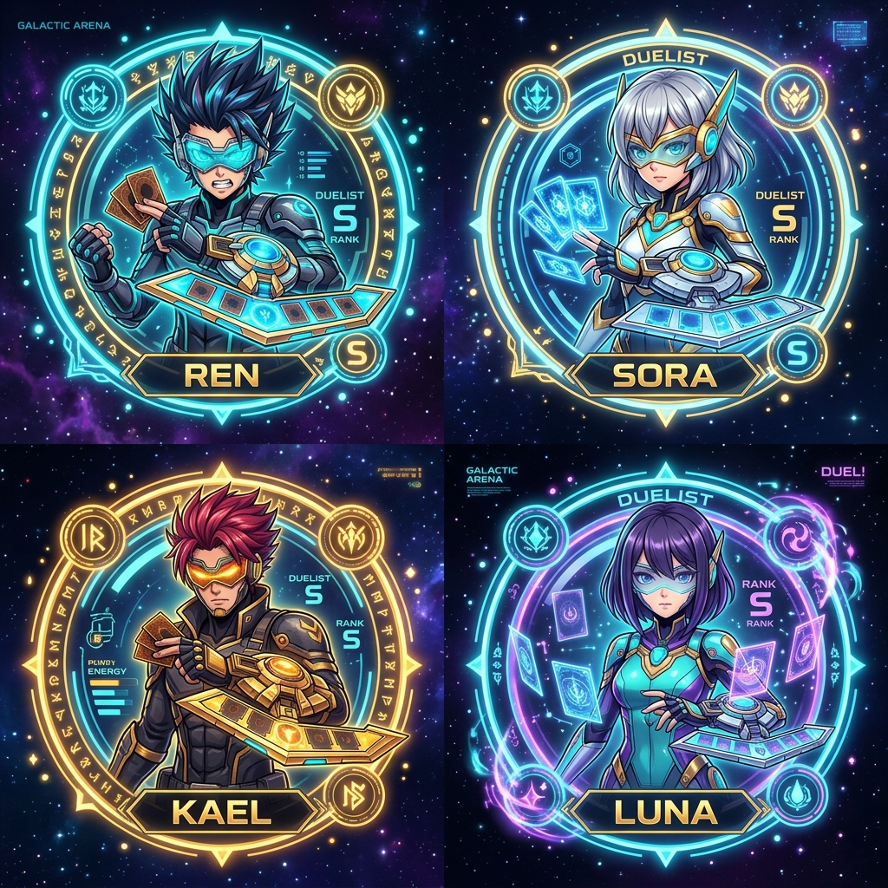
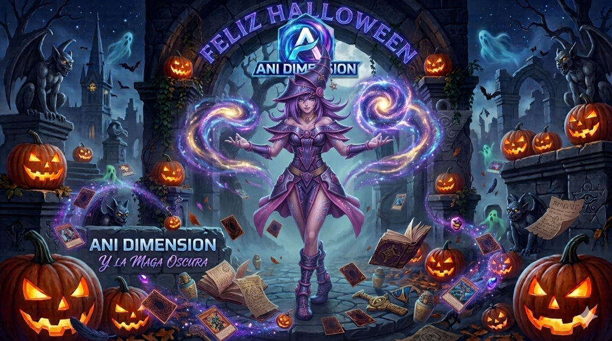

Los potenciadores son artefactos dimensionales que aumentan de forma permanente las estadísticas del avatar que tengas activo. Puedes adquirirlos en la Tienda de Potenciadores o recibirlos como premios y compensaciones de la administración directamente en tu Buzón.
CONSUMO DIRECTO Y PERMANENTE EN EL AVATAR ACTIVO
Multiplicadores de EXP, Starships y Suerte
Cada potenciador otorga un porcentaje específico de bonificación a EXP (experiencia de duelo), Starships (ganancias por victoria) o Suerte (mayor probabilidad de cartas raras).
Buzón Satelital & Baúl de Recompensas
Tus potenciadores comprados o regalados se resguardan de forma segura en tu Buzón. Desde allí puedes inspeccionarlos o consumirlos cuando lo desees.
Acumulación Directa en tu Avatar
Al pulsar "Aplicar Potenciador" en el Buzón, el porcentaje se transfiere de inmediato y de forma permanente al Avatar que tengas equipado en ese instante.
2. MEMBRESÍA VIP ANI-DIMENSION
El estatus VIP otorga privilegios exclusivos para los duelistas más dedicados, mejorando el ratio de recompensas durante el período contratado.
MEMBRESÍA TEMPORAL POR DÍAS ACUMULABLES
Bonificaciones Activas de Duelo
Otorga bonificaciones globales adicionales de EXP, Starships y Suerte durante todos los días que tu membresía se encuentre activa.
Distintivo VIP Dorado
Insignia VIP dorada visible en tu perfil de duelista, ranking mundial y estado de jugador.
Días Acumulables
Adquirir múltiples paquetes VIP en la Tienda suma los días de duración a tu saldo temporal sin perder tiempo previo.

3. AVATARES, IDENTIDAD & SUERTE
Tu avatar representa tu identidad en el universo de Ani Dimension. Cada avatar posee bonificaciones iniciales propias de EXP, Starships y atributo de Suerte en combate.
1 AVATAR ACTIVO A LA VEZ CON POTENCIADORES PERSONALIZADOS
Atributo de Suerte del Avatar
Aumenta las probabilidades de conseguir cartas Ultra Raras y Secret Raras al abrir sobres en la Tienda y en los drops de cartas de NPCs.
Colección de Avatares Libres
Accede a tu colección completa de avatares desde tu Perfil para alternar entre duelistas según tu preferencia.
País, Bandera y Título Oficial
Configura la bandera de tu país, tu avatar favorito y tu título honorífico desde la sección Perfil del menú.
4. TAPETES DE DUELO & FUNDAS DE CARTAS
Personaliza la apariencia estética de tu campo de batalla y de tus barajas con tapetes y fundas místicas oficiales.
EQUIPAMIENTO DE 1 TAPETE Y 1 FUNDA POR DUELISTA
Tapetes de Duelo para tu Campo
Superficies de combate ilustradas con monstruos legendarios que transforman visualmente tu mitad del campo en duelos.
Fundas Protectoras para tus Barajas
Diseños exclusivos para el reverso de tus cartas visibles en el Deck Builder, en tu mano y en el campo de batalla.
Gestión Directa desde tu Perfil
Equipa o desactiva tus tapetes y fundas poseídos en cualquier momento desde los botones de cosméticos de tu perfil.
5. MODO AVENTURA: 12 ERAS & MEDALLAS DE HONOR
Recorre la historia legendaria de Yu-Gi-Oh! a través de 12 Eras históricas con más de 200 duelistas y jefes épicos, desde Domino y el Reino de Duelistas hasta Neo Domino y el Ark Cradle.
BONIFICADORES AUTOMÁTICOS Y PERMANENTES POR MEDALLA
Campaña Histórica de 12 Eras
Enfrenta adversarios con dificultad progresiva, barajas icónicas y temas musicales orquestales dedicados por época.
Medallas de Honor Permanentes
Al triunfar sobre cada duelista, desbloqueas su Medalla oficial. Sus bonificaciones de EXP, Starships y Suerte se activan de forma automática sin necesidad de equiparlas.
Suma Consolidada en Bonificaciones Globales
Todas las medallas que obtienes suman sus porcentajes permanentemente a tus Bonificaciones Globales en tu Perfil.
6. DUELOS REGLAMENTARIOS & RECOMPENSAS
Ani Dimension implementa las reglas maestras de duelo con 8000 Life Points, 5 fases por turno, cálculo automático de daño y música dinámica reactiva al combate.
DUELOS VS NPCS & MULTIJUGADOR EN TIEMPO REAL
Duelos vs NPC con IA Temática
Enfrenta a duelistas legendarios con barajas calibradas y bandas sonoras épicas para entrenar tus estrategias.
Arena Multijugador PvP en Vivo
Salas de duelo públicas y privadas con límite reglamentario de 120 segundos por turno y clasificación en el Ranking Global.
Estadísticas Oficiales en Perfil
Seguimiento preciso de tu historial: Total de Duelos, Victorias, Derrotas y Porcentaje de Victorias tanto en modo NPC como en modo PvP.

7. EVENTOS DE ROMPECABEZAS & COLECCIÓN MÍSTICA
Durante el evento del Rompecabezas Milenario, cada victoria en duelos te permite descubrir piezas místicas numeradas para forjar el artefacto legendario.
COLECCIÓN MÍSTICA EN TABLERO DEL EVENTO
Drop de Piezas por Victorias
Vencer en duelos de Modo Aventura y en la Arena PvP otorga probabilidad directa de hallar piezas místicas para tu colección.
Ensamblado del Tablero al 100%
Cada pieza única descubierta se engarza en su posición exacta del artefacto hasta completar el 100% de la reliquia.
Registro y Clasificación de Duelistas
Consulta en todo momento tu conteo de piezas reunidas directamente desde la sección de Eventos.